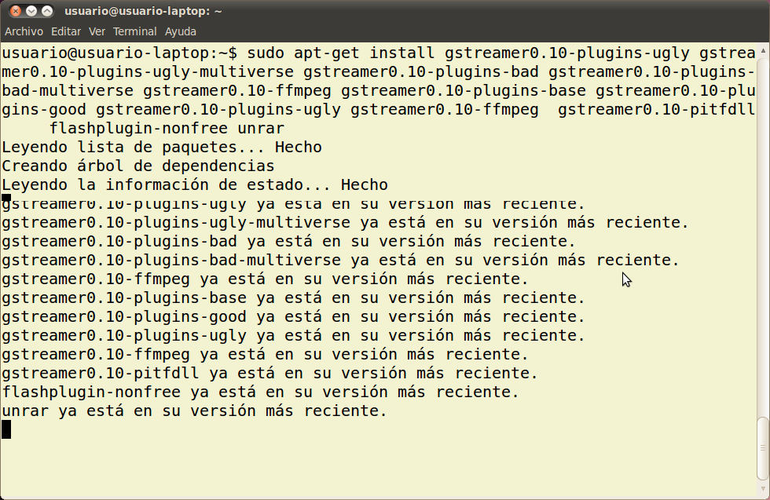

2. Paquetes recomendados
Agregar el repositorio correspondiente desde una terminal:
sudo wget --output-document=/etc/apt/sources.list.d/medibuntu.list http://www.medibuntu.org/sources.list.d/$(lsb_release -cs).list && sudo apt-get --quiet update && sudo apt-get --yes --quiet --allow-unauthenticated install medibuntu-keyring && sudo apt-get --quiet update
Una vez agregados los repositorios, instalamos los codecs:
Para la reproducción de DVD:
sudo apt-get install libdvdcss2
El resto de codecs propietarios, todas las plataformas:
sudo apt-get install non-free-codecs
Windows codecs para i386
sudo apt-get install w32codecs
Windows codecs para amd64
sudo apt-get install w64codecs
Windows codecs para ppc
sudo apt-get install ppc-codecs
Para instalar paquetes requerimos tener permisos de administrador.
El contenido de esta sección esta basado en la web Instalar codecs en Ubuntu 10.10 "Maverick Meerkat" [medibuntu]
Desde una terminal comprueba si los siguientes paquetes o sus contenidos se encuentran instalados.
* transcoder (sox)
* mencoder
* Lame
* Ffmpeg
* Mpg123
* mjpegtool
* gstreamer0.10-plugins-ugly
* gstreamer0.10-plugins-ugly-multiverse
* gstreamer0.10-plugins-bad
* gstreamer0.10-plugins-bad-multiverse
* gstreamer0.10-ffmpeg
* gstreamer0.10-plugins-base
* gstreamer0.10-plugins-good
* gstreamer0.10-plugins-ugly
* streamer0.10-ffmpeg
* gstreamer0.10-pitfdll flashplugin-nonfree
* unrar

Jo.R.C.A. 2004 - 2011

Edición de Audio y Video con Software Libre by José Ramón Cerdeira Alonso is licensed under a Creative Commons Reconocimiento-No comercial-Compartir bajo la misma licencia 3.0 España License